Working with Hydrogen
Copyright © 2008 D. Michael McIntyre
This tutorial was written with a pre-release version of Rosegarden 1.7.0
Hydrogen is a very nice QT drum sequencer and synthesizer in one. We get a lot of questions about the best way to use Hydrogen in conjunction with Rosegarden, and I thought it would make for a nice topic here in this new series of tutorials.
There are basically three ways to work with Hydrogen:
Hydrogen as a Soft Synth
The most direct way to use Hydrogen with Rosegarden is simply to fire it up, and point Rosegarden at it. For simplicity, we'll start Hydrogen first:
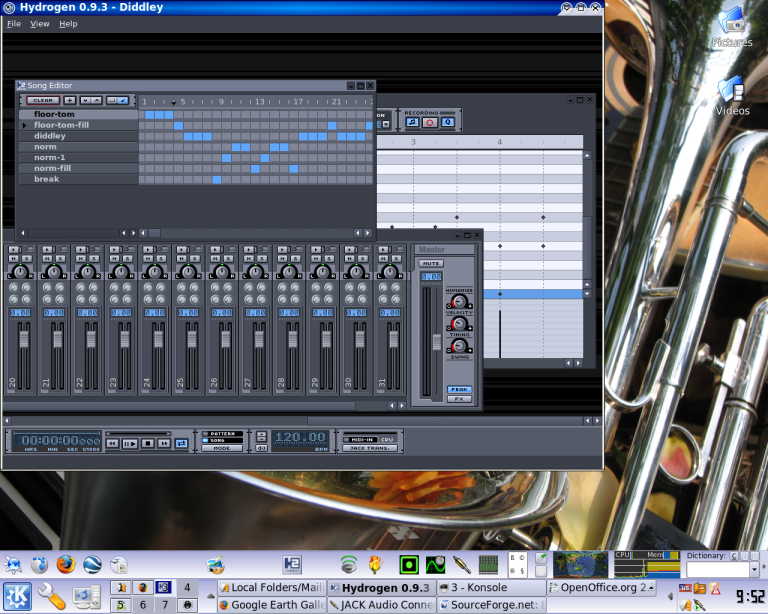
Now start Rosegarden. If you don't have any other soft synths (eg. QSynth, ZynAddSubFX, Aeolus) running, Hydrogen will come up in the top slot as the default playback device. (Hence the simplicity.)
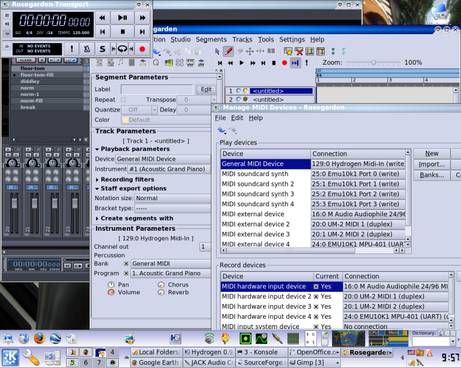
From here, you can just play Hydrogen with your keyboard (if you have one attached) and basically knock yourself out. Hydrogen only speaks one language, so all channels are percussion channels. There's no need to use instrument #10/channel 10, though it's nice to do for the sake of convention.
To record yourself playing Hydrogen (and then play it back) just enable the MIDI recording LED on track 10, hit the record button, and play something.

If you wish, you can use the percussion matrix to edit your recording, or to add notes to a new segment you've drawn with the pencil.
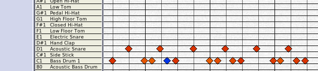
One problem with using Hydrogen in this fashion is that the supplied General MIDI percussion key map does not accurately describe Hydrogen's default "GMKit" drumkit. The labels generally match toward the lower range of the keyboard, but there are gaps, misplaced drums, and huge areas of drums missing entirely.
There is no convenient way to deal with that problem. If you want, you can find Hydrogen's .xml file for yourself, and implement a custom keymap in Rosegarden to match:
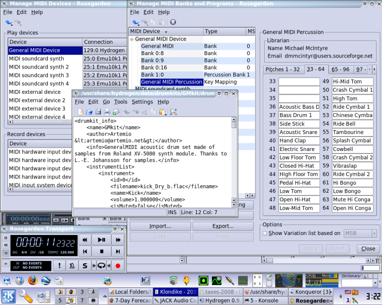
Unfortunately, as you can see from the screenshot, this proves to be incredibly obnoxious. What Hydrogen calls "id 0" Rosegarden happens to call "key 35," I think. All in all, none of this can possibly be worth the bother, so if you want help remembering what note does what in Hydrogen, the best thing to do is use Hydrogen's own sequencing engine, which provides labels for what makes which noise, and assorted other controls as well
Hydrogen as a Sequencer
In light of the key naming problem, and general incompatibility between Hydrogen's drum kits and the GM standard ("GMKit" is closest, and the rest are even more divergent, sometimes quite radically so) it may be best to use Hydrogen to sequence the drums, and let Hydrogen play its own sequences.
Let's step back to a clean slate here. We'll start QSynth using Fluid Soundfont (if you're lucky you can find it already installed on your computer, or else you can get it on the web in a more raw form) and then start Hydrogen, then Rosegarden.
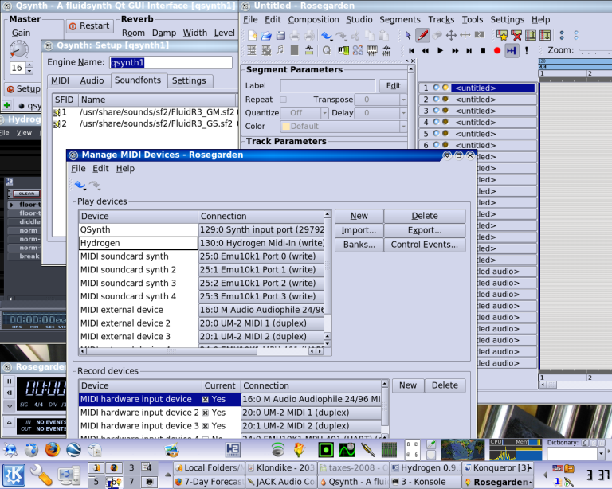
I renamed the top two devices in Rosegarden's device manager for clarity. Now we can go into Hydrogen and create a song made up of patterns. This is not a Hydrogen tutorial, so we will just use the supplied demo song "Diddly" for illustrative purposes.
Use Hydrogen's File -> Open and choose:
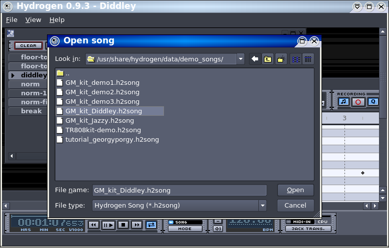
Now we want to enable JACK transport sync in both Rosegarden and Hydrogen. In Hydrogen, it's a simple matter of clicking the button toward the bottom right of its main window:
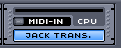
Rosegarden makes this a little more complicated, under Settings -> Configure Rosegarden on the General page, under Behaviour ("Behaviour"? I didn't realise we still had some strings of the wrong linguistic flavour in here. Oh well.)
With the two synced through JACK's transport, their transports should run at the same time, or you can control both of them from the outside with QJackCtl as well.
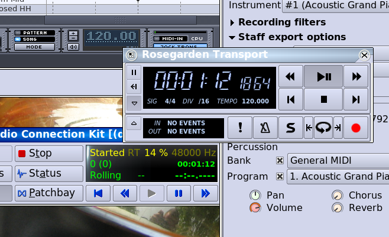
Now you can use Rosegarden and QSynth to record something to go along with this demo. Nothing is coming to mind musically at the moment. Let's pretent I came up with some brilliant piano improv to go along with this drum solo.
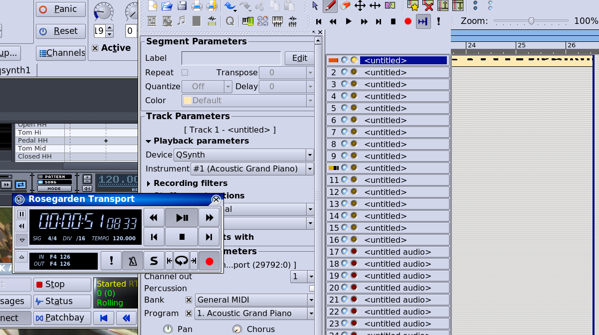
I should confess that I just had quite a lot of trouble getting that to work. The three transports got out of sync with each other rather easily when I tried to start this by hitting Rosegarden's record button. I think I had to get the transports all stopped, then all rolling again, and only then hit the record button. I'm not sure what I just did. Hit buttons haphazardly, like I did, and you, too, should eventually be able to get there.
Importing Hydrogen Patterns
The final option is to import Hydrogen's patterns into Rosegarden, and play it as a soft synth, as in the first example cited. Simply go to File -> Import... -> Import Hydrogen File and then find the demo song we're using.
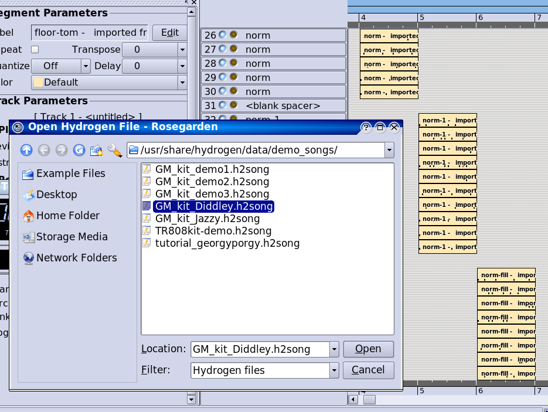
The results are obnoxious to work with, but if you configure Rosegarden so that these parts are playing via Hydrogen (which they are not for me at this writing, because QSynth is enjoying the top slot in the device manager at the moment) then they will come out sounding correctly, and you can then diddle them from there to your heart's content.
Recording Hydrogen
Most of these options are a pain to some degree or another, so the final option 4 of 3 is simply to record Hydrogen as an audio segment. Once the drum part is finalized, this eliminates the need to bother setting Hydrogen back up the same way if you want to work on the song again at some future point.
To do this, simply click the Connect button in QJackCtl, and route Hydrogen's audio outs to Rosegarden's audio ins:
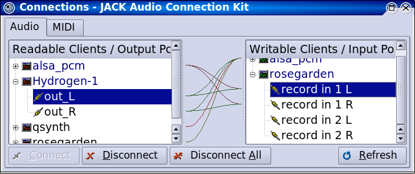
Now arm an audio track for recording, hit the record button, et voilà:
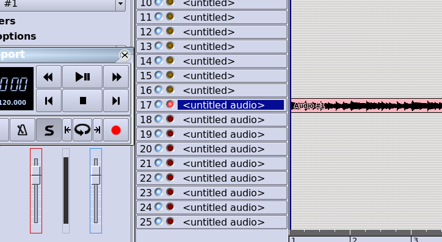
(Of course the recording might not be as simple as this. Particularly if you have other audible parts going at the same time. This isn't an audio recording tutorial either, I'm afraid.)